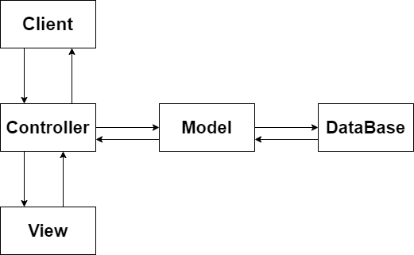
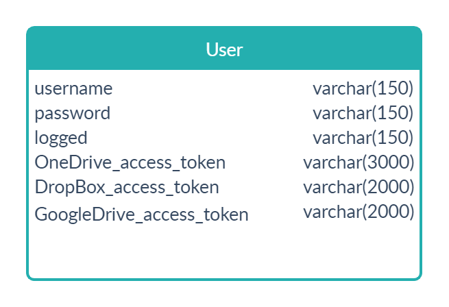

Community Draft
STOL este un API care pune la dispozitia clientilor posibilitatea de gestiona resurse de pe OneDrive, GoogleDrive si DropBox.
STOL este una din aplicatiile care vine in ajutorul oricui prin imbinarea mai multor servicii cloud in unul singur.
Scopurile acestei aplicatii web sunt:
Partea de Backend presupune cod PHP, deoarece este un limbaj usor si care pune la dispozitie multe functionalitati care nu necesita utilizarea suplimentara de Framework-uri.
Stocarea se foloseste de baza de date pusa la dispozitie de XAMPP, MySql.
Suplimentar, sunt utilizare serviciile puse la dispozitie de OneDrive, DropBox si GoogleDrive. Astfel, aplicatia foloseste API-urile acestor servicii pentru gestionarea live a tuturor cerintelor.
ArhitecturaMVC:
Baza de date:
